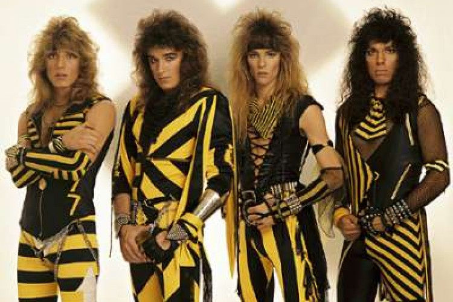
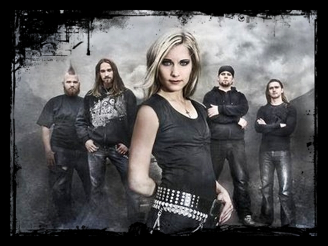
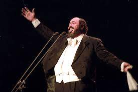

Curiosidades
STRYPER:

O CD "LP" ou "SOLDIER UNDER COMMAND" foi eleito pela revista especializada ROADIE CREW,
como um dos 100 Melhores do Mundo de todos os tempos, ao lado de bandas famosas como Judas Priest e Iron Maiden.
Hoje em dia, seus maiores sucessos são:
"Honestly", "The Hell With the Devil" e "Call On You"
| Nome | Artista | Duração | Ano |
|---|---|---|---|
| Stryper | 4:07 | 2008 | |
| Stryper | 4:04 | 2005 | |
| Stryper | 3:57 | 1989 |

HB:

A banda finlandesa HB nasceu em Forssa, Finlândia, no ano de 2002 e em 2003 surgiu o primeiro
album, "Uskon Puolesta". O som era inovador, mas havia um porém, todas as musicas eram em finlandês, e os fãs da
banda tinham que esperar pela boa vontade dos que entendiam finlandês para traduzir uma música ou outra. Até que então,
no ano de 2008 a banda lançou no My Space um Pre-release com duas músicas totalmente em inglês do album "Enne". Um dos
diferenciais da banda são as letras, profundas e ao mesmo tempo diretas.
Atualmente, seus maiores sucessos são:
"It Is Time", "God Has All Glory" e "Be Aware"
| Nome | Artista | Duração | Ano |
|---|---|---|---|
| HB | 3:50 | 2008 | |
| HB | 5:00 | 2005 | |
| HB | 5:44 | 1989 |
Nessun Dorma:

Na ópera ambientada na China, a linda princesa Turandot, por vingança contra estrangeiros – que no passado violentaram e mataram uma de suas ancestrais – não quer se casar. No entanto, seu pai, o imperador Altum, determina que ela se case com algum príncipe estrangeiro.
Depois de muito tempo e muito contrariada, Turandot aceita a exigência paterna, mas estabelece uma condição para se casar: o pretendente a ser escolhido seria aquele que resolvesse três enigmas que ela escolheria. Se o pretendente acertasse todos, ela se casaria; caso contrário, ele deveria ser morto. Assim, ela cria uma condição quase impossível de ser satisfeita e com baixas probabilidades de ser aceita – três chances de morrer e uma para com ela se casar.
Um príncipe tártaro, jovem, desconhecido e muito destemido, chamado Calaf, aceita o desafio de tentar resolver os três enigmas. Ele tinha em comum a mesma origem daquele que havia violentado a ancestral de Turandot: ambos eram tártaros. Dessa maneira, não restava ao príncipe outra alternativa a não ser esconder o seu nome e sua origem – continuaria a ser um jovem e destemido príncipe desconhecido.
Enlouquecida fica a princesa quando Calaf resolve os três enigmas, e suplica com todas as suas forças que não seja entregue ao desconhecido. Diante da reação da bela Turandot, Calaf, apaixonado que estava, desejoso de que ela viesse para com ele se casar pela sua própria vontade, oferece uma saída para a princesa: decifrar um novo enigma. A princesa estaria desobrigada do casamento caso ela acertasse o seu nome; para isso, ela teria uma longa noite para descobrir o nome do príncipe desconhecido. Caso ela tivesse sucesso, ele seria condenado à morte.
A princesa dá uma ordem para todos os seus súditos: ninguém deve dormir naquela noite até que o nome do príncipe desconhecido seja descoberto. O pai do príncipe e sua escrava são presos, sendo a escrava torturada até a morte, sem, contudo, revelar o nome do príncipe – pois é apaixonada por ele.
Na longa noite, ninguém dorme, e ninguém descobre o nome do príncipe. Para Turandot, a aurora chega como um grande castigo, uma condenação ao casamento, só lhe restando o desespero e a tristeza. No entanto, para o príncipe, a chegada das cores, com o nascer do dia, trazia uma revelação – muitos anos depois, formulada por Lacan: de que amar é dar o que não se tem a alguém que não o quer. Ele revela intencionalmente o seu nome para a princesa, livrando-a do compromisso e se condenando à morte. Desse modo, vida ele já mais não tinha para ser entregue a alguém que não o queria.
A princesa, completamente emocionada com a coragem e com a prova de amor do jovem, salva-o da morte, não pronuncia seu verdadeiro nome e prefere dizer que ele se chama Amor.
| Nome | Artista | Duração | Ano |
|---|---|---|---|
| Luciano Pavarotti | 3:16 | 1994 |
O Barbeiro De Sevilla:
Rossini compôs a maior parte de sua obra embriagado.
A ópera “O barbeiro de Sevilha”
teria sido escrita às pressas, em 13 dias, para o pagamento de uma dívida. Ela foi vaiada na estreia, no
Teatro Argentina, em Roma, no ano de 1817
| Nome | Artista | Duração | Ano |
|---|---|---|---|
| Gioachino Rossini | 5:20 | 1816 |